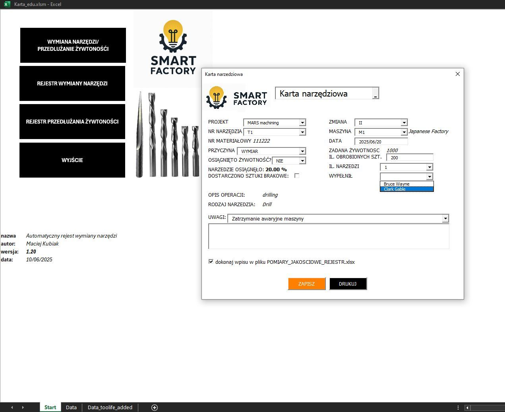
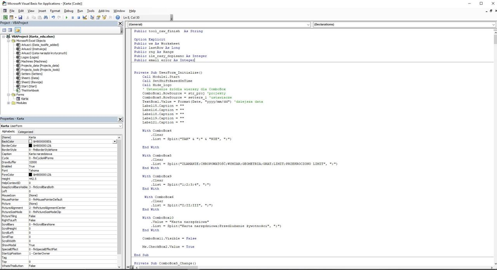
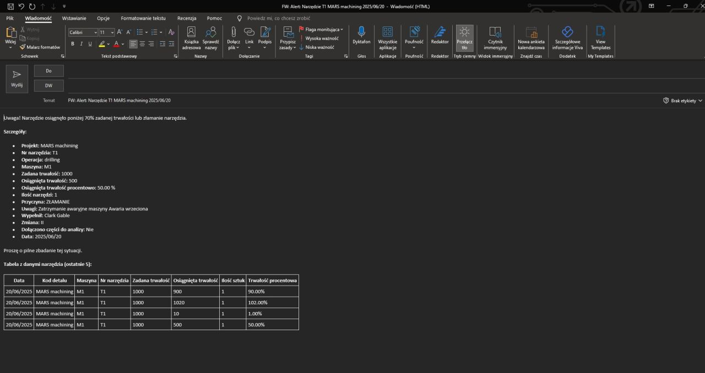

Excel? Aplikacja? Można. Ale po co? Cyfryzacja Rejestru Narzędzi
Autorski projekt optymalizacyjny zrealizowany w branży produkcyjnej (07.2025), który całkowicie wyciągnął proces z epoki „produkcyjnej archeologii” i zastąpił go w pełni zautomatyzowanym ekosystemem VBA.
Wyzwanie inżynieryjne i stan wyjściowy
Przed wdrożeniem proces przypominał biurokratyczny koszmar: ustawiacz wpisywał zużycie na swoim dysku, w osobnym pliku prowadził wymiany dla działu jakości, a na koniec wystawiał ręczną kartę zużycia, którą technolog musiał fizycznie przepisywać do własnych analiz. Brakowało spójnego repozytorium, a czas marnowany na ludzkie kopiowanie danych sparaliżowałby każdy ambitny zespół inżynieryjny.
Architektura rozwiązania i stos technologiczny
- Jeden klik, pełna ewidencja (UserForm): Przejrzysty interfejs z polami wyboru projektu narzędzia, zadanej żywotności i parametrów. Skrypt błyskawicznie i bezbłędnie zapisuje dane w tle.
- Automatyczny rejestr Kontroli Jakości: System samoczynnie generuje wpis w rejestrze wymian dla QC, która ma obowiązek weryfikacji wyniku po każdej wymianie, eliminując potrzebę tworzenia osobnych plików.
- System natychmiastowych eskalacji e-mail: Automatyczna wysyłka powiadomień przez Outlooka do technologa oraz Machining Managera w przypadku złamania narzędzia, awarii maszyny lub nieosiągnięcia minimum 80% założonej żywotności.
- Kontrolowany moduł wydłużania narzędzi: Specjalny podsystem operujący pod restrykcyjną logiką nadzoru, bezpiecznie zarządzający korektami żywotności bez ryzyka samowoli.
Rezultaty biznesowe
Projekt udowodnił, że dobrze zaprojektowany Excel z logiką VBA potrafi zastąpić toporne i archaiczne procesy. Zlikwidowano podwójną robotę ustawiaczy i technologów, ucięto błędy manualne do zera i zagwarantowano natychmiastową reakcję kadry zarządzającej na anomalie procesowe.


